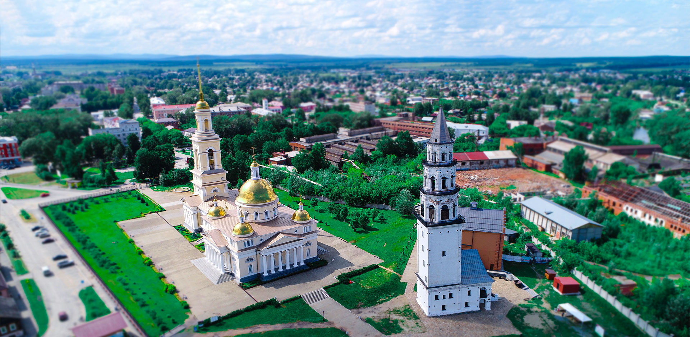
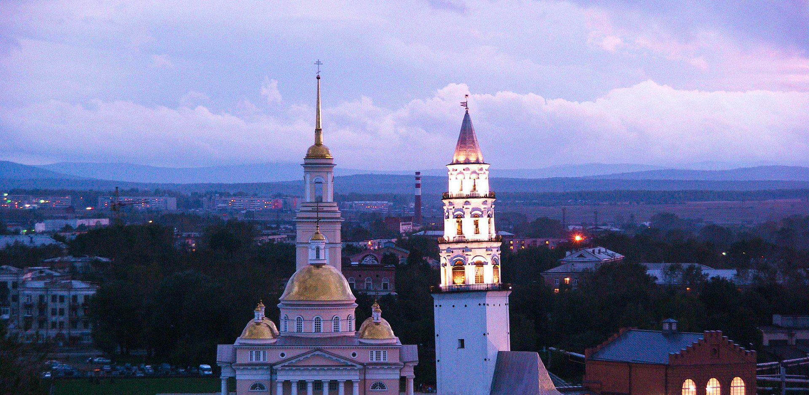
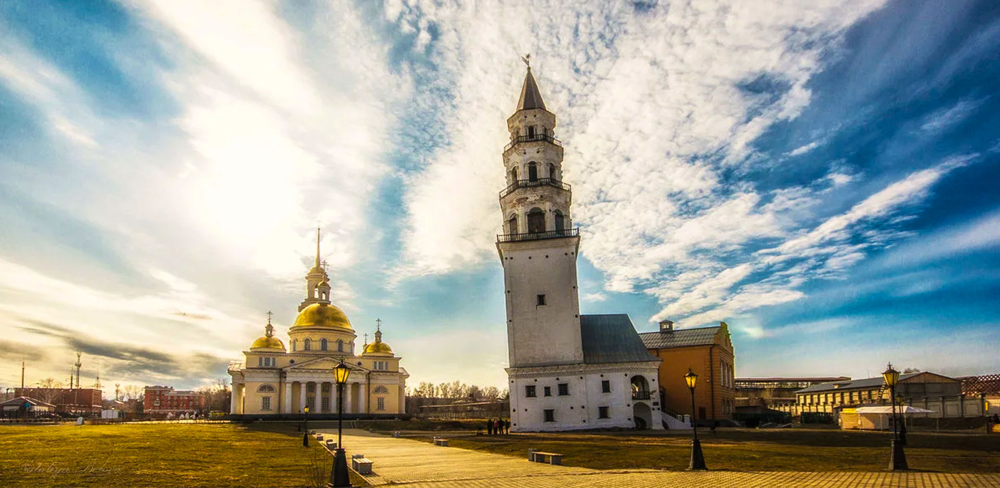
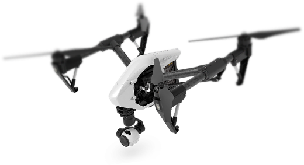
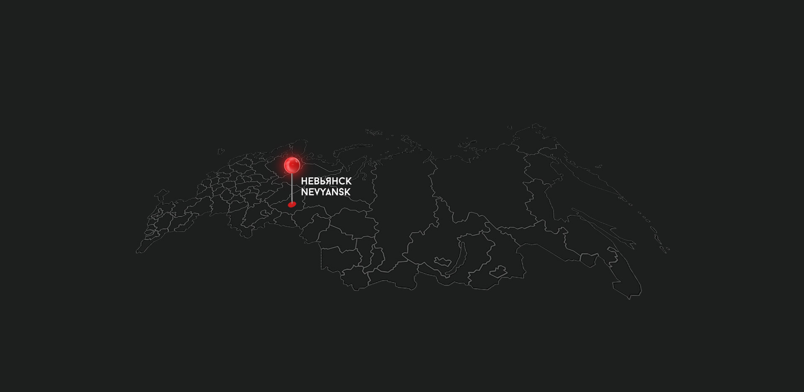

невьянск — столица династии демидовых
Исторический город знаменитых заводчиков и один
из самых старейших городов Урала!

население 22 806 чел.
Дата основания:
1701 г.
Площадь:
39,1 км²
Город в России, административный центр Невьянского городского
округа Свердловской области. Один из старейших городов Урала, центр
народного промысла Невьянской иконы.

невьянская наклонная башня
Наклонная башня, расположенная в центре
Невьянска, была построена в 1721-1725 годах
по приказу Акинфия Демидова.
Высота башни - 57,5 метров, основание -
квадрат со стороной 9,5 метров.
Открыть историю

где находится?
Город Невьянск расположен на восточном склоне Среднего Урала, на реке Нейве,
которая в черте города образует Невьянский пруд, продолжающийся на юг и восток
за пределы города. Невьянск находится в 74 км по автодороге, в 99 км по железно
дороге к северу от Екатеринбурга и в 76 км по автодороге и 50 км по железной
дороге к югу от Нижнего Тагила. В 40 км южнее Невьянска расположено озеро Таватуй.

